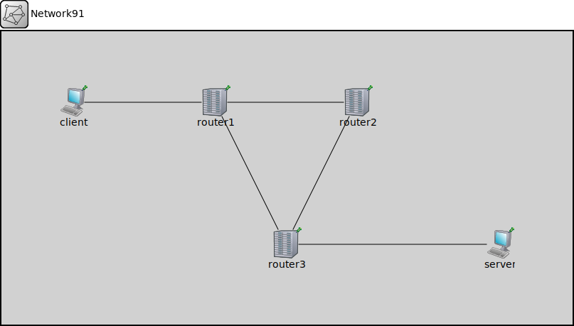

Package: inet.tutorials.protocol
Network91
network(no description)
Usage diagram
The following diagram shows usage relationships between types. Unresolved types are missing from the diagram.
Properties
| Name | Value | Description |
|---|---|---|
| isNetwork |
Unassigned submodule parameters
| Name | Type | Default value | Description |
|---|---|---|---|
| client.interfaceTable.displayAddresses | bool | false |
whether to display IP addresses on links |
| client.forwardingService.d1.displayStringTextFormat | string | "processed %p pk (%l)" |
determines the text that is written on top of the submodule |
| client.forwardingService.d1.forwardServiceRegistration | bool | true | |
| client.forwardingService.d1.forwardProtocolRegistration | bool | true | |
| client.forwardingService.forwarding.address | string | "" | |
| client.forwardingService.sendWithHopLimit.hopLimit | int | ||
| client.dataService.fragmenter.displayStringTextFormat | string | "processed %p pk (%l)" |
determines the text that is written on top of the submodule |
| client.dataService.fragmenter.deleteSelf | bool | false | |
| client.dataService.fragmenter.headerPosition | string | "front" | |
| client.dataService.sequenceNumbering.displayStringTextFormat | string | "processed %p pk (%l)" |
determines the text that is written on top of the submodule |
| client.dataService.deaggregator.displayStringTextFormat | string | "processed %p pk (%l)" |
determines the text that is written on top of the submodule |
| client.dataService.deaggregator.deleteSelf | bool | false | |
| client.dataService.defragmenter.displayStringTextFormat | string | "processed %p pk (%l)" |
determines the text that is written on top of the submodule |
| client.dataService.defragmenter.deleteSelf | bool | false | |
| client.dataService.defragmenter.headerPosition | string | "front" | |
| client.dataService.reordering.displayStringTextFormat | string | "processed %p pk (%l)" |
determines the text that is written on top of the submodule |
| client.d1.displayStringTextFormat | string | "processed %p pk (%l)" |
determines the text that is written on top of the submodule |
| client.d1.forwardServiceRegistration | bool | true | |
| client.d1.forwardProtocolRegistration | bool | true | |
| client.interface.pcapRecorder.verbose | bool | true |
whether to log packets on the module output |
| client.interface.pcapRecorder.pcapFile | string | "" |
the PCAP file to be written |
| client.interface.pcapRecorder.fileFormat | string | "pcapng" | |
| client.interface.pcapRecorder.snaplen | int | 65535 |
maximum number of bytes to record per packet |
| client.interface.pcapRecorder.dumpBadFrames | bool | true |
enable dump of frames with hasBitError |
| client.interface.pcapRecorder.sendingSignalNames | string | "packetSentToLower" |
space-separated list of outbound packet signals to subscribe to |
| client.interface.pcapRecorder.receivingSignalNames | string | "packetReceivedFromLower" |
space-separated list of inbound packet signals to subscribe to |
| client.interface.pcapRecorder.dumpProtocols | string | "ethernetmac ppp ieee80211mac" |
space-separated list of protocol names as defined in the Protocol class |
| client.interface.pcapRecorder.packetFilter | object | "*" |
which packets are considered, matches all packets by default |
| client.interface.pcapRecorder.helpers | string | "" |
usable PcapRecorder::IHelper helpers for accept packettype and store/convert packet as specified linktype currently available: "inet::AckingMacToEthernetPcapRecorderHelper" |
| client.interface.pcapRecorder.alwaysFlush | bool | false |
flush the pcapFile after each write to ensure that all packets are captured in case of a crash |
| client.interface.pcapRecorder.displayStringTextFormat | string | "rec: %n pks" | |
| client.interface.sendToMacAddress.address | string | "" | |
| client.interface.resending.displayStringTextFormat | string | "processed %p pk (%l)" |
determines the text that is written on top of the submodule |
| client.interface.resending.numRetries | int | ||
| client.interface.sendWithAcknowledge.acknowledgeTimeout | double | ||
| client.interface.m1.displayStringTextFormat | string | "passed %p pk (%l)" |
determines the text that is written on top of the submodule |
| client.interface.m1.forwardServiceRegistration | bool | true | |
| client.interface.m1.forwardProtocolRegistration | bool | true | |
| client.interface.fcsInserter.displayStringTextFormat | string | "processed %p pk (%l)" |
determines the text that is written on top of the submodule |
| client.interface.fcsInserter.fcsMode | string | "declared" | |
| client.interface.fcsInserter.headerPosition | string | "back" | |
| client.interface.transmitter.displayStringTextFormat | string | "processed %p pk (%l)" |
determines the text that is written on top of the submodule |
| client.interface.transmitter.clockModule | string | "" |
relative path of a module that implements IClock(1,2); optional |
| client.interface.transmitter.datarate | double | ||
| client.interface.receiveAtMacAddress.address | string | ||
| client.interface.d1.displayStringTextFormat | string | "processed %p pk (%l)" |
determines the text that is written on top of the submodule |
| client.interface.d1.forwardServiceRegistration | bool | true | |
| client.interface.d1.forwardProtocolRegistration | bool | true | |
| client.interface.fcsChecker.displayStringTextFormat | string | "dropped %d/%p pk (%k/%l)" |
determines the text that is written on top of the submodule |
| client.interface.fcsChecker.backpressure | bool | false | |
| client.interface.fcsChecker.headerPosition | string | "back" | |
| router1.interfaceTable.displayAddresses | bool | false |
whether to display IP addresses on links |
| router1.forwardingService.d1.displayStringTextFormat | string | "processed %p pk (%l)" |
determines the text that is written on top of the submodule |
| router1.forwardingService.d1.forwardServiceRegistration | bool | true | |
| router1.forwardingService.d1.forwardProtocolRegistration | bool | true | |
| router1.forwardingService.forwarding.address | string | "" | |
| router1.forwardingService.sendWithHopLimit.hopLimit | int | ||
| router1.dataService.fragmenter.displayStringTextFormat | string | "processed %p pk (%l)" |
determines the text that is written on top of the submodule |
| router1.dataService.fragmenter.deleteSelf | bool | false | |
| router1.dataService.fragmenter.headerPosition | string | "front" | |
| router1.dataService.sequenceNumbering.displayStringTextFormat | string | "processed %p pk (%l)" |
determines the text that is written on top of the submodule |
| router1.dataService.deaggregator.displayStringTextFormat | string | "processed %p pk (%l)" |
determines the text that is written on top of the submodule |
| router1.dataService.deaggregator.deleteSelf | bool | false | |
| router1.dataService.defragmenter.displayStringTextFormat | string | "processed %p pk (%l)" |
determines the text that is written on top of the submodule |
| router1.dataService.defragmenter.deleteSelf | bool | false | |
| router1.dataService.defragmenter.headerPosition | string | "front" | |
| router1.dataService.reordering.displayStringTextFormat | string | "processed %p pk (%l)" |
determines the text that is written on top of the submodule |
| router1.d1.displayStringTextFormat | string | "processed %p pk (%l)" |
determines the text that is written on top of the submodule |
| router1.d1.forwardServiceRegistration | bool | true | |
| router1.d1.forwardProtocolRegistration | bool | true | |
| router1.interface.pcapRecorder.verbose | bool | true |
whether to log packets on the module output |
| router1.interface.pcapRecorder.pcapFile | string | "" |
the PCAP file to be written |
| router1.interface.pcapRecorder.fileFormat | string | "pcapng" | |
| router1.interface.pcapRecorder.snaplen | int | 65535 |
maximum number of bytes to record per packet |
| router1.interface.pcapRecorder.dumpBadFrames | bool | true |
enable dump of frames with hasBitError |
| router1.interface.pcapRecorder.sendingSignalNames | string | "packetSentToLower" |
space-separated list of outbound packet signals to subscribe to |
| router1.interface.pcapRecorder.receivingSignalNames | string | "packetReceivedFromLower" |
space-separated list of inbound packet signals to subscribe to |
| router1.interface.pcapRecorder.dumpProtocols | string | "ethernetmac ppp ieee80211mac" |
space-separated list of protocol names as defined in the Protocol class |
| router1.interface.pcapRecorder.packetFilter | object | "*" |
which packets are considered, matches all packets by default |
| router1.interface.pcapRecorder.helpers | string | "" |
usable PcapRecorder::IHelper helpers for accept packettype and store/convert packet as specified linktype currently available: "inet::AckingMacToEthernetPcapRecorderHelper" |
| router1.interface.pcapRecorder.alwaysFlush | bool | false |
flush the pcapFile after each write to ensure that all packets are captured in case of a crash |
| router1.interface.pcapRecorder.displayStringTextFormat | string | "rec: %n pks" | |
| router1.interface.sendToMacAddress.address | string | "" | |
| router1.interface.resending.displayStringTextFormat | string | "processed %p pk (%l)" |
determines the text that is written on top of the submodule |
| router1.interface.resending.numRetries | int | ||
| router1.interface.sendWithAcknowledge.acknowledgeTimeout | double | ||
| router1.interface.m1.displayStringTextFormat | string | "passed %p pk (%l)" |
determines the text that is written on top of the submodule |
| router1.interface.m1.forwardServiceRegistration | bool | true | |
| router1.interface.m1.forwardProtocolRegistration | bool | true | |
| router1.interface.fcsInserter.displayStringTextFormat | string | "processed %p pk (%l)" |
determines the text that is written on top of the submodule |
| router1.interface.fcsInserter.fcsMode | string | "declared" | |
| router1.interface.fcsInserter.headerPosition | string | "back" | |
| router1.interface.transmitter.displayStringTextFormat | string | "processed %p pk (%l)" |
determines the text that is written on top of the submodule |
| router1.interface.transmitter.clockModule | string | "" |
relative path of a module that implements IClock(1,2); optional |
| router1.interface.transmitter.datarate | double | ||
| router1.interface.receiveAtMacAddress.address | string | ||
| router1.interface.d1.displayStringTextFormat | string | "processed %p pk (%l)" |
determines the text that is written on top of the submodule |
| router1.interface.d1.forwardServiceRegistration | bool | true | |
| router1.interface.d1.forwardProtocolRegistration | bool | true | |
| router1.interface.fcsChecker.displayStringTextFormat | string | "dropped %d/%p pk (%k/%l)" |
determines the text that is written on top of the submodule |
| router1.interface.fcsChecker.backpressure | bool | false | |
| router1.interface.fcsChecker.headerPosition | string | "back" | |
| router2.interfaceTable.displayAddresses | bool | false |
whether to display IP addresses on links |
| router2.forwardingService.d1.displayStringTextFormat | string | "processed %p pk (%l)" |
determines the text that is written on top of the submodule |
| router2.forwardingService.d1.forwardServiceRegistration | bool | true | |
| router2.forwardingService.d1.forwardProtocolRegistration | bool | true | |
| router2.forwardingService.forwarding.address | string | "" | |
| router2.forwardingService.sendWithHopLimit.hopLimit | int | ||
| router2.dataService.fragmenter.displayStringTextFormat | string | "processed %p pk (%l)" |
determines the text that is written on top of the submodule |
| router2.dataService.fragmenter.deleteSelf | bool | false | |
| router2.dataService.fragmenter.headerPosition | string | "front" | |
| router2.dataService.sequenceNumbering.displayStringTextFormat | string | "processed %p pk (%l)" |
determines the text that is written on top of the submodule |
| router2.dataService.deaggregator.displayStringTextFormat | string | "processed %p pk (%l)" |
determines the text that is written on top of the submodule |
| router2.dataService.deaggregator.deleteSelf | bool | false | |
| router2.dataService.defragmenter.displayStringTextFormat | string | "processed %p pk (%l)" |
determines the text that is written on top of the submodule |
| router2.dataService.defragmenter.deleteSelf | bool | false | |
| router2.dataService.defragmenter.headerPosition | string | "front" | |
| router2.dataService.reordering.displayStringTextFormat | string | "processed %p pk (%l)" |
determines the text that is written on top of the submodule |
| router2.d1.displayStringTextFormat | string | "processed %p pk (%l)" |
determines the text that is written on top of the submodule |
| router2.d1.forwardServiceRegistration | bool | true | |
| router2.d1.forwardProtocolRegistration | bool | true | |
| router2.interface.pcapRecorder.verbose | bool | true |
whether to log packets on the module output |
| router2.interface.pcapRecorder.pcapFile | string | "" |
the PCAP file to be written |
| router2.interface.pcapRecorder.fileFormat | string | "pcapng" | |
| router2.interface.pcapRecorder.snaplen | int | 65535 |
maximum number of bytes to record per packet |
| router2.interface.pcapRecorder.dumpBadFrames | bool | true |
enable dump of frames with hasBitError |
| router2.interface.pcapRecorder.sendingSignalNames | string | "packetSentToLower" |
space-separated list of outbound packet signals to subscribe to |
| router2.interface.pcapRecorder.receivingSignalNames | string | "packetReceivedFromLower" |
space-separated list of inbound packet signals to subscribe to |
| router2.interface.pcapRecorder.dumpProtocols | string | "ethernetmac ppp ieee80211mac" |
space-separated list of protocol names as defined in the Protocol class |
| router2.interface.pcapRecorder.packetFilter | object | "*" |
which packets are considered, matches all packets by default |
| router2.interface.pcapRecorder.helpers | string | "" |
usable PcapRecorder::IHelper helpers for accept packettype and store/convert packet as specified linktype currently available: "inet::AckingMacToEthernetPcapRecorderHelper" |
| router2.interface.pcapRecorder.alwaysFlush | bool | false |
flush the pcapFile after each write to ensure that all packets are captured in case of a crash |
| router2.interface.pcapRecorder.displayStringTextFormat | string | "rec: %n pks" | |
| router2.interface.sendToMacAddress.address | string | "" | |
| router2.interface.resending.displayStringTextFormat | string | "processed %p pk (%l)" |
determines the text that is written on top of the submodule |
| router2.interface.resending.numRetries | int | ||
| router2.interface.sendWithAcknowledge.acknowledgeTimeout | double | ||
| router2.interface.m1.displayStringTextFormat | string | "passed %p pk (%l)" |
determines the text that is written on top of the submodule |
| router2.interface.m1.forwardServiceRegistration | bool | true | |
| router2.interface.m1.forwardProtocolRegistration | bool | true | |
| router2.interface.fcsInserter.displayStringTextFormat | string | "processed %p pk (%l)" |
determines the text that is written on top of the submodule |
| router2.interface.fcsInserter.fcsMode | string | "declared" | |
| router2.interface.fcsInserter.headerPosition | string | "back" | |
| router2.interface.transmitter.displayStringTextFormat | string | "processed %p pk (%l)" |
determines the text that is written on top of the submodule |
| router2.interface.transmitter.clockModule | string | "" |
relative path of a module that implements IClock(1,2); optional |
| router2.interface.transmitter.datarate | double | ||
| router2.interface.receiveAtMacAddress.address | string | ||
| router2.interface.d1.displayStringTextFormat | string | "processed %p pk (%l)" |
determines the text that is written on top of the submodule |
| router2.interface.d1.forwardServiceRegistration | bool | true | |
| router2.interface.d1.forwardProtocolRegistration | bool | true | |
| router2.interface.fcsChecker.displayStringTextFormat | string | "dropped %d/%p pk (%k/%l)" |
determines the text that is written on top of the submodule |
| router2.interface.fcsChecker.backpressure | bool | false | |
| router2.interface.fcsChecker.headerPosition | string | "back" | |
| router3.interfaceTable.displayAddresses | bool | false |
whether to display IP addresses on links |
| router3.forwardingService.d1.displayStringTextFormat | string | "processed %p pk (%l)" |
determines the text that is written on top of the submodule |
| router3.forwardingService.d1.forwardServiceRegistration | bool | true | |
| router3.forwardingService.d1.forwardProtocolRegistration | bool | true | |
| router3.forwardingService.forwarding.address | string | "" | |
| router3.forwardingService.sendWithHopLimit.hopLimit | int | ||
| router3.dataService.fragmenter.displayStringTextFormat | string | "processed %p pk (%l)" |
determines the text that is written on top of the submodule |
| router3.dataService.fragmenter.deleteSelf | bool | false | |
| router3.dataService.fragmenter.headerPosition | string | "front" | |
| router3.dataService.sequenceNumbering.displayStringTextFormat | string | "processed %p pk (%l)" |
determines the text that is written on top of the submodule |
| router3.dataService.deaggregator.displayStringTextFormat | string | "processed %p pk (%l)" |
determines the text that is written on top of the submodule |
| router3.dataService.deaggregator.deleteSelf | bool | false | |
| router3.dataService.defragmenter.displayStringTextFormat | string | "processed %p pk (%l)" |
determines the text that is written on top of the submodule |
| router3.dataService.defragmenter.deleteSelf | bool | false | |
| router3.dataService.defragmenter.headerPosition | string | "front" | |
| router3.dataService.reordering.displayStringTextFormat | string | "processed %p pk (%l)" |
determines the text that is written on top of the submodule |
| router3.d1.displayStringTextFormat | string | "processed %p pk (%l)" |
determines the text that is written on top of the submodule |
| router3.d1.forwardServiceRegistration | bool | true | |
| router3.d1.forwardProtocolRegistration | bool | true | |
| router3.interface.pcapRecorder.verbose | bool | true |
whether to log packets on the module output |
| router3.interface.pcapRecorder.pcapFile | string | "" |
the PCAP file to be written |
| router3.interface.pcapRecorder.fileFormat | string | "pcapng" | |
| router3.interface.pcapRecorder.snaplen | int | 65535 |
maximum number of bytes to record per packet |
| router3.interface.pcapRecorder.dumpBadFrames | bool | true |
enable dump of frames with hasBitError |
| router3.interface.pcapRecorder.sendingSignalNames | string | "packetSentToLower" |
space-separated list of outbound packet signals to subscribe to |
| router3.interface.pcapRecorder.receivingSignalNames | string | "packetReceivedFromLower" |
space-separated list of inbound packet signals to subscribe to |
| router3.interface.pcapRecorder.dumpProtocols | string | "ethernetmac ppp ieee80211mac" |
space-separated list of protocol names as defined in the Protocol class |
| router3.interface.pcapRecorder.packetFilter | object | "*" |
which packets are considered, matches all packets by default |
| router3.interface.pcapRecorder.helpers | string | "" |
usable PcapRecorder::IHelper helpers for accept packettype and store/convert packet as specified linktype currently available: "inet::AckingMacToEthernetPcapRecorderHelper" |
| router3.interface.pcapRecorder.alwaysFlush | bool | false |
flush the pcapFile after each write to ensure that all packets are captured in case of a crash |
| router3.interface.pcapRecorder.displayStringTextFormat | string | "rec: %n pks" | |
| router3.interface.sendToMacAddress.address | string | "" | |
| router3.interface.resending.displayStringTextFormat | string | "processed %p pk (%l)" |
determines the text that is written on top of the submodule |
| router3.interface.resending.numRetries | int | ||
| router3.interface.sendWithAcknowledge.acknowledgeTimeout | double | ||
| router3.interface.m1.displayStringTextFormat | string | "passed %p pk (%l)" |
determines the text that is written on top of the submodule |
| router3.interface.m1.forwardServiceRegistration | bool | true | |
| router3.interface.m1.forwardProtocolRegistration | bool | true | |
| router3.interface.fcsInserter.displayStringTextFormat | string | "processed %p pk (%l)" |
determines the text that is written on top of the submodule |
| router3.interface.fcsInserter.fcsMode | string | "declared" | |
| router3.interface.fcsInserter.headerPosition | string | "back" | |
| router3.interface.transmitter.displayStringTextFormat | string | "processed %p pk (%l)" |
determines the text that is written on top of the submodule |
| router3.interface.transmitter.clockModule | string | "" |
relative path of a module that implements IClock(1,2); optional |
| router3.interface.transmitter.datarate | double | ||
| router3.interface.receiveAtMacAddress.address | string | ||
| router3.interface.d1.displayStringTextFormat | string | "processed %p pk (%l)" |
determines the text that is written on top of the submodule |
| router3.interface.d1.forwardServiceRegistration | bool | true | |
| router3.interface.d1.forwardProtocolRegistration | bool | true | |
| router3.interface.fcsChecker.displayStringTextFormat | string | "dropped %d/%p pk (%k/%l)" |
determines the text that is written on top of the submodule |
| router3.interface.fcsChecker.backpressure | bool | false | |
| router3.interface.fcsChecker.headerPosition | string | "back" | |
| server.interfaceTable.displayAddresses | bool | false |
whether to display IP addresses on links |
| server.forwardingService.d1.displayStringTextFormat | string | "processed %p pk (%l)" |
determines the text that is written on top of the submodule |
| server.forwardingService.d1.forwardServiceRegistration | bool | true | |
| server.forwardingService.d1.forwardProtocolRegistration | bool | true | |
| server.forwardingService.forwarding.address | string | "" | |
| server.forwardingService.sendWithHopLimit.hopLimit | int | ||
| server.dataService.fragmenter.displayStringTextFormat | string | "processed %p pk (%l)" |
determines the text that is written on top of the submodule |
| server.dataService.fragmenter.deleteSelf | bool | false | |
| server.dataService.fragmenter.headerPosition | string | "front" | |
| server.dataService.sequenceNumbering.displayStringTextFormat | string | "processed %p pk (%l)" |
determines the text that is written on top of the submodule |
| server.dataService.deaggregator.displayStringTextFormat | string | "processed %p pk (%l)" |
determines the text that is written on top of the submodule |
| server.dataService.deaggregator.deleteSelf | bool | false | |
| server.dataService.defragmenter.displayStringTextFormat | string | "processed %p pk (%l)" |
determines the text that is written on top of the submodule |
| server.dataService.defragmenter.deleteSelf | bool | false | |
| server.dataService.defragmenter.headerPosition | string | "front" | |
| server.dataService.reordering.displayStringTextFormat | string | "processed %p pk (%l)" |
determines the text that is written on top of the submodule |
| server.d1.displayStringTextFormat | string | "processed %p pk (%l)" |
determines the text that is written on top of the submodule |
| server.d1.forwardServiceRegistration | bool | true | |
| server.d1.forwardProtocolRegistration | bool | true | |
| server.interface.pcapRecorder.verbose | bool | true |
whether to log packets on the module output |
| server.interface.pcapRecorder.pcapFile | string | "" |
the PCAP file to be written |
| server.interface.pcapRecorder.fileFormat | string | "pcapng" | |
| server.interface.pcapRecorder.snaplen | int | 65535 |
maximum number of bytes to record per packet |
| server.interface.pcapRecorder.dumpBadFrames | bool | true |
enable dump of frames with hasBitError |
| server.interface.pcapRecorder.sendingSignalNames | string | "packetSentToLower" |
space-separated list of outbound packet signals to subscribe to |
| server.interface.pcapRecorder.receivingSignalNames | string | "packetReceivedFromLower" |
space-separated list of inbound packet signals to subscribe to |
| server.interface.pcapRecorder.dumpProtocols | string | "ethernetmac ppp ieee80211mac" |
space-separated list of protocol names as defined in the Protocol class |
| server.interface.pcapRecorder.packetFilter | object | "*" |
which packets are considered, matches all packets by default |
| server.interface.pcapRecorder.helpers | string | "" |
usable PcapRecorder::IHelper helpers for accept packettype and store/convert packet as specified linktype currently available: "inet::AckingMacToEthernetPcapRecorderHelper" |
| server.interface.pcapRecorder.alwaysFlush | bool | false |
flush the pcapFile after each write to ensure that all packets are captured in case of a crash |
| server.interface.pcapRecorder.displayStringTextFormat | string | "rec: %n pks" | |
| server.interface.sendToMacAddress.address | string | "" | |
| server.interface.resending.displayStringTextFormat | string | "processed %p pk (%l)" |
determines the text that is written on top of the submodule |
| server.interface.resending.numRetries | int | ||
| server.interface.sendWithAcknowledge.acknowledgeTimeout | double | ||
| server.interface.m1.displayStringTextFormat | string | "passed %p pk (%l)" |
determines the text that is written on top of the submodule |
| server.interface.m1.forwardServiceRegistration | bool | true | |
| server.interface.m1.forwardProtocolRegistration | bool | true | |
| server.interface.fcsInserter.displayStringTextFormat | string | "processed %p pk (%l)" |
determines the text that is written on top of the submodule |
| server.interface.fcsInserter.fcsMode | string | "declared" | |
| server.interface.fcsInserter.headerPosition | string | "back" | |
| server.interface.transmitter.displayStringTextFormat | string | "processed %p pk (%l)" |
determines the text that is written on top of the submodule |
| server.interface.transmitter.clockModule | string | "" |
relative path of a module that implements IClock(1,2); optional |
| server.interface.transmitter.datarate | double | ||
| server.interface.receiveAtMacAddress.address | string | ||
| server.interface.d1.displayStringTextFormat | string | "processed %p pk (%l)" |
determines the text that is written on top of the submodule |
| server.interface.d1.forwardServiceRegistration | bool | true | |
| server.interface.d1.forwardProtocolRegistration | bool | true | |
| server.interface.fcsChecker.displayStringTextFormat | string | "dropped %d/%p pk (%k/%l)" |
determines the text that is written on top of the submodule |
| server.interface.fcsChecker.backpressure | bool | false | |
| server.interface.fcsChecker.headerPosition | string | "back" |
Source code
network Network91 { submodules: client: Host { @display("p=100,100"); } router1: Router { @display("p=300,100"); } router2: Router { @display("p=500,100"); } router3: Router { @display("p=400,300"); } server: Host { @display("p=700,300"); } connections: client.g++ <--> { delay = 1ms; } <--> router1.g++; router1.g++ <--> { delay = 1ms; } <--> router2.g++; router1.g++ <--> { delay = 1ms; } <--> router3.g++; router2.g++ <--> { delay = 1ms; } <--> router3.g++; router3.g++ <--> { delay = 1ms; } <--> server.g++; }File: tutorials/protocol/Network91.ned
 This documentation is released under the Creative Commons license
This documentation is released under the Creative Commons license